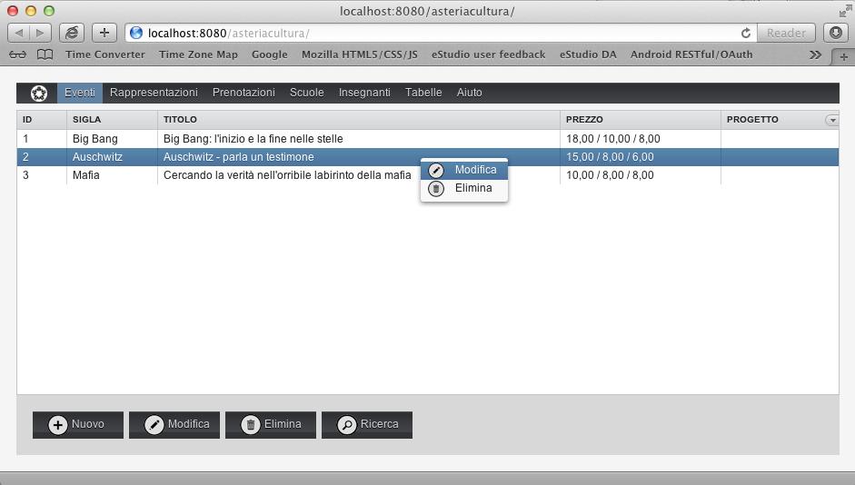
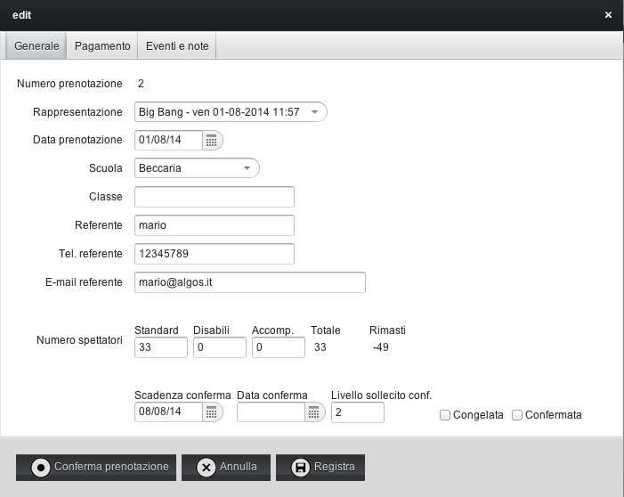
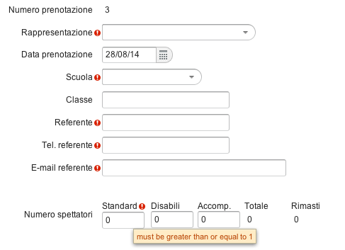

La barra dei menu nella parte superiore della finestra consente di accedere a tutte le funzioni del programma.
Le funzioni principali (Eventi, Rappresentazioni, Prenotazioni) si invocano cliccando direttamente sul rispettivo menu, mentre le funzioni accessorie, di utilizzo meno frequente, sono contenute nei menu Tabelle e Aiuto.
E' possibile aprire più di una finestra per operare contemporaneamente su diverse parti del programma senza dover chiudere quella in cui si sta lavorando.
Per fare questo, aprite una nuova finestra (o un nuovo pannello) del browser e collegatevi al programma.I principali moduli del programma presentano le informazioni in forma di lista.
Cliccando sul titolo della colonna è possibile cambiare l'ordine della lista.
La larghezza delle colonne si può modificare trascinando il bordo della colonna.
In alto a destra, un selettore consente di scegliere quali colonne visualizzare.
Per selezionare una riga si clicca sulla riga.
La parte inferiore della lista contiene i bottoni standard per creare nuovi record, modificarli, eliminarli, eseguire la ricerca, ed altro.
Per utilizzare alcune funzioni (es. Modifica, Elimina...) bisogna prima selezionare la/e righe sulle quali applicare la funzione, oppure potete cliccare col tasto destro sulla riga desiderata e apparirà il menu contestuale con i comandi disponibili.
Per modificare un record si può anche cliccare 2 volte sulla riga.


La scheda presenta le informazioni dettagliate di un record e consente di modificarle.
La scheda può contenere diverse pagine (tabs) che si possono selezionare cliccando sulle linguette presenti nella parte superiore (ove presenti).
La parte inferiore della scheda contiene i bottoni Annulla e Registra per confermare o abbandonare le modifiche, ed eventualmente altri bottoni specifici.
A volte alcune informazioni sono obbligatorie e se non sono presenti la scheda non può essere registrata. In questo caso verrà visualizzato un punto esclamativo rosso accanto all'informazione obbligatoria. Muovendo il mouse sopra all'area interessata apparirà la spiegazione del problema.
